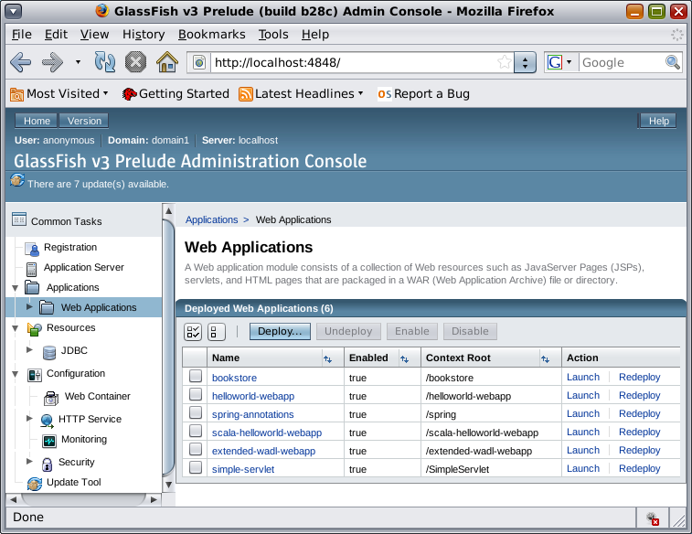

This subdirectory contains Jersey samples and javadocs.
Selection of Jersey samples are placed in the samples subdirectory. All of them were taken from Jersey project at http://jersey.java.net/, and are available also on java.net maven 2 repository at http://download.java.net/maven/2/com/sun/jersey/samples/jersey-samples/. They represent samples, which could be packaged as wars and easily deployed onto GlassFish instance.
The following samples are included:
For running the examples from command line you will need maven installed. Then you can just:
cd $AS_HOME/jersey/samples/[sample-name] mvn clean package $AS_HOME/bin/asadmin deploy target/[sample-name].war
You can also use GlassFish admin console to deploy a generated war file. Just start your GlassFish instance
and visit http://localhost:4848. Then select
Applications->Web Applications node in the left-hand menu
and click the Deploy... button. In the
following screen, just select an example war file, and click the OK button at the bottom
of the screen to get it deployed.

Another option would be to run the examples using NetBeans 6.5
For Jersey based web applications, which are using JSP Views feature (see the bookstore example), you will need to bundle jersey jars with the application war file. This is a known limitation, which will be addressed in the future releases.